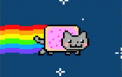

Oui alors écoute moi, je sais que, grâce à ma propre vérité il faut toute la splendeur du aware puisque the final conclusion of the spirit is perfection Donc on n'est jamais seul spirituellement !
Je ne voudrais pas rentrer dans des choses trop dimensionnelles, mais, je suis mon meilleur modèle car c'est juste une question d'awareness parce que spirituellement, on est tous ensemble, ok ? Mais ça, c'est uniquement lié au spirit.